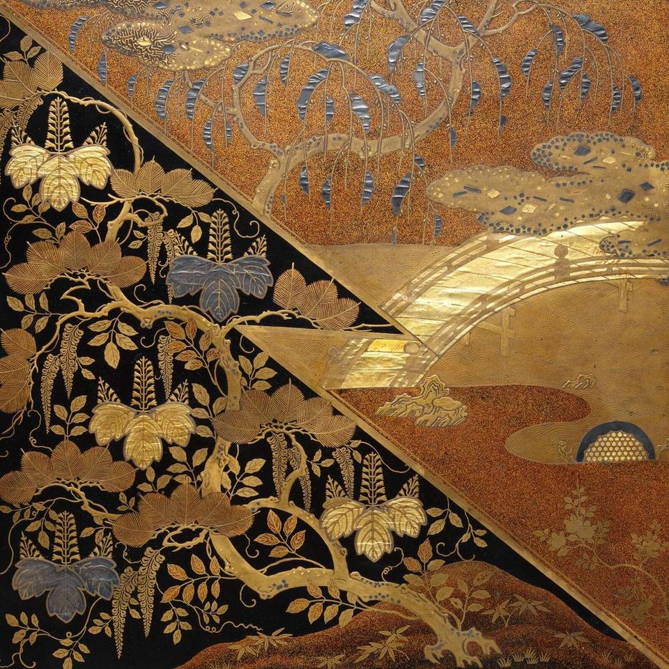

メーカーの知識を、
選べる仕組みに。
メーカーの商品知識を、誰でも使える選定フローに変える。売れる「仕組み」をつくります。
初期 198,000円（税込）月額 9,800円（税込）・契約1年
しくみ
つくった人には分かる。でも、お客さまには分からない。御社の商品知識と選び分けのノウハウを、誰でも使えるWeb上の選定フローに変換します。
選定知識まで設計します。質問を置ける道具だけを渡すのではなく、杜工舎が商品群を調べ、お客さまが迷う分岐を見つけ、設問と配点を設計します。条件に合う3案を、選定理由とともに提示する完成品としてお渡しします。
01
商品群を調べる
御社のECと資料から、選び分けに必要な条件を整理します。
02
質問と配点を設計する
専門知識を5〜7問へ翻訳し、条件ごとの優先順位を組みます。
03
Webアプリにする
御社の色と商品写真で仕上げ、既存のECページへ設置します。
04
更新しながら育てる
商品情報と軽微なフロー変更を、月額保守の範囲で反映します。
料金
- 初期制作
- 198,000円（税込）
- 月額利用・保守
- 9,800円／月（税込）
- 納期
- 2週間ほど
- 契約期間
- 1年
業界・商品調査、設問・配点設計、商品データ登録、Webアプリ制作、既存サイトへの設置、初期修正を含みます。契約期間中、同一商品群・同一の選定ロジックを競合他社へ提供しません。契約期間の満了後も、納品したWebアプリ（HTML）はそのままお使いいただけます。ただし満了後は、同一商品群・同一の選定ロジックを競合他社へ提供しない取り決めは終了します。
お問い合わせ
ご質問だけでも、
構いません。
メールでご相談いただけます。